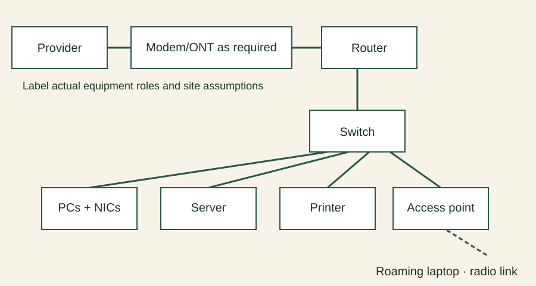

Justify links, equipment and sharing organisation
Unit 2 · fictional bicycle-shop client brief. Read the chapter explanation first. These are worked decisions, not observed learner results.
Worked decisions
| Focus | Decision and explanation |
|---|---|
| Purpose/advantages/disadvantages | The shop shares a printer and booking files. Sharing reduces duplication but introduces access controls, administration and failure dependencies. |
| Fibre | An optical link carries light and may suit a required distance/capacity; verify interfaces, cost and installation. It is not a reason to replace every short desk cable. |
| Wired/wireless | Cable suits fixed desks; radio supports a roaming laptop but coverage/interference need checking. A stated link rate is not measured application throughput. |
| Rate calculation | For decimal units: 20 MB × 8 / 10 Mb/s = 16 seconds ideally. Protocol overhead, contention and endpoint limits can increase actual time. |
| Physical topology | Wired desks connect to a central switch in a star. An access point adds wireless clients to the LAN; wireless does not by itself specify the sharing model. |
| Client-server/peer-to-peer | A dedicated service can centralise file access; peers can share directly. These describe service organisation, not a replacement for drawing physical links. |
| Component roles | NIC attaches an endpoint; switch links local devices; router connects networks; server supplies a service. A modem suits a modem-based provider link; fibre may use an ONT instead. Combined equipment must still have its roles labelled. |

Apply independently
Draw a LAN for two fixed shop PCs, one roaming laptop and a shared printer. Label media, NIC, switch, access point, router, service equipment and optional server. Compare client-server with peer sharing against the brief, calculate 40 MB at 20 Mb/s, and identify one failure dependency plus a coverage/capacity test.
Use this within the existing chapter task, not an extra assessed project or additional teaching week. Record expected and actual results separately.
Evidence to retain
- Differentiate physical topology from service organisation.
- Show the provider boundary and label assumptions needing confirmation.
- The independent ideal transfer result is 16 seconds; state units and practical limits.
Actual learner performance, native application output and independent teacher review remain unverified. Supplied model results must not be copied into an observed-result log.